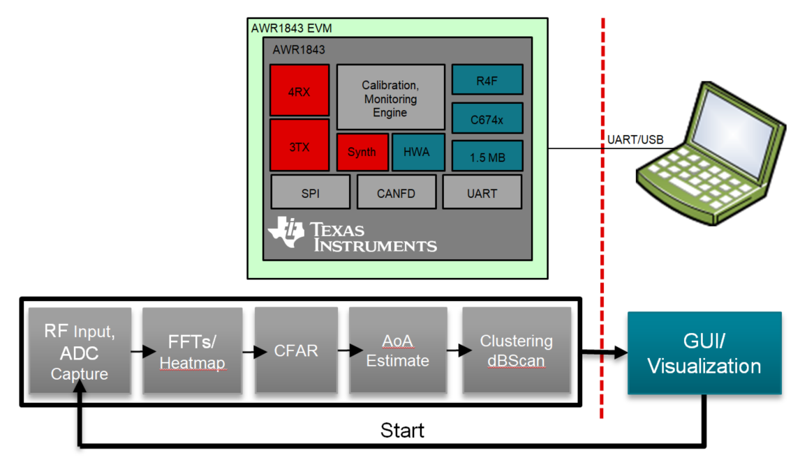
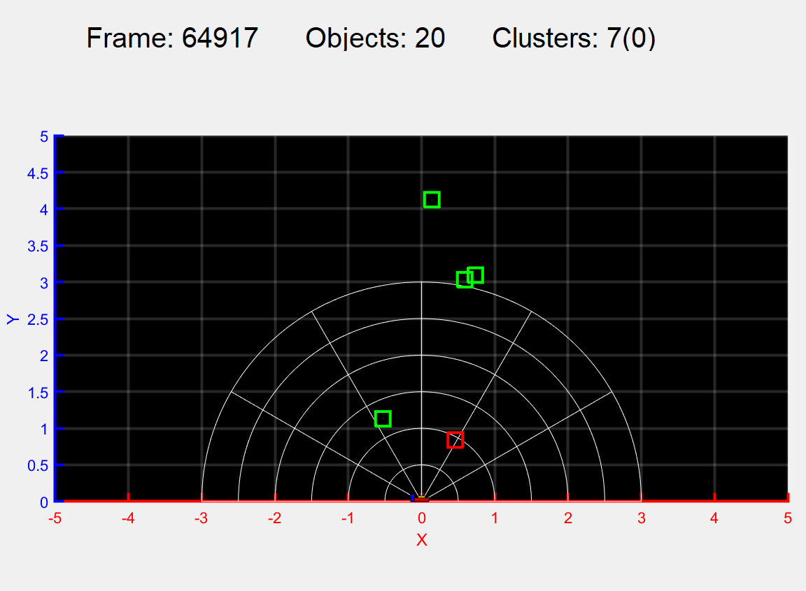
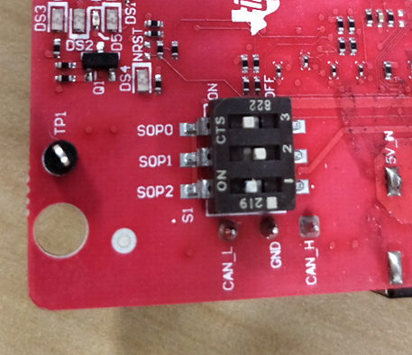
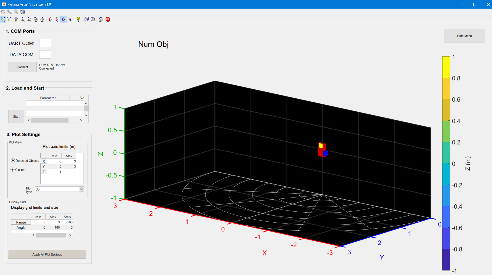
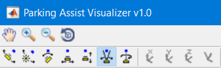
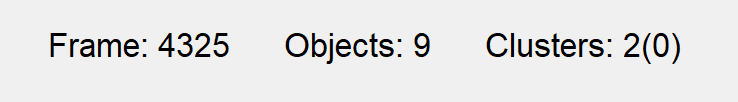
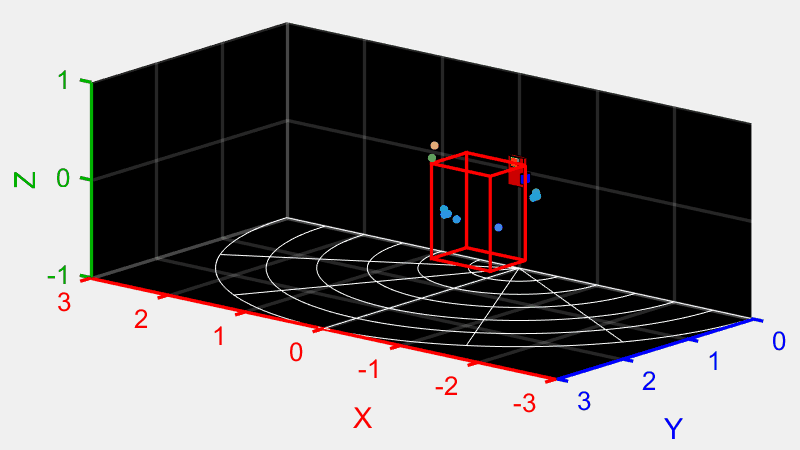

Overview
===========
This lab demonstrates the use of TI mmWave sensors to detect objects that are within close proximity of a vehicle for the purpose of automated parking.
Using the TI AWR1843 EVM, algorithms run onboard the single-chip device to create Range-Azimuth and Range-Elevation
heatmaps, then performs object detection with CFAR, angle of arrival estimation and clustering on configured range rows in the heatmaps.
<div style="text-align:center" markdown="1">

</div>
Quickstart
===========
The quickstart contains:
* Precompiled binaries for flashing the device using Uniflash
* Visualizer as .exe
1. Hardware and Software Requirements
-----------
### Hardware
Item | Details
--------------------------|-----------------
Device | [AWR1843 EVM](http://www.ti.com/tool/AWR1843BOOST)
Computer | PC with Windows 7 or 10. If a laptop is used, please use the 'High Performance' power plan in Windows. 2.4Ghz processor, 8GB RAM recommended.
Micro USB Cable | USB 2.0 to Micro USB.
Power Supply | 5V, 3A with 2.1-mm barrel jack (center positive). The power supply can be wall adapter style or a battery pack with a USB to barrel jack cable.
### Software
Tool | Version | Required For |Details
----------------------------|---------------------------|---------------|--
mmWave Automotive Toolbox | 2.4.5+ | na | Contains all files (quickstart, visualizer and firmware source files) related to mmWave Automated Parking Lab
MATLAB Runtime | 2017a (9.2) | GUI Visualizer | To run the quickstart visualizer the [runtime](https://www.mathworks.com/products/compiler/matlab-runtime.html) is sufficient.
TI mmWave SDK | 3.1.0.2 | Firmware Source Code | The latest [TI mmWave SDK](http://dev.ti.com/tirex/#/?link=Software%2FmmWave%20SDK) and all the related tools are required to be installed as specified in the mmWave SDK release notes
TI Emulators package | 6.0.0576.0 or later | - | Upgrade to the latest using CCS update process (see SDK user guide for more details)
2. Physical Setup
-----------
For best results, the EVM should be positioned approximately at 1 meter (+-0.2m) on the rear of the vehicle, as shown in the photo below.
The graph on the right shows the corresponding 2D XY output from the visualizer.

3. Flash the Device
-----------
* Power on the EVM using a 5V/3A power supply.
* Flash the following image using **Uniflash**
Image | Location
--------------------------|------------
Meta Image 1/RadarSS | `C:<install_dir>\lab0008_park_assist\prebuilt_binaries\pa_18xx_mss_demo.bin`
[[+d Expand for help using Uniflash
* Connect the EVM to your PC and check the COM ports in **Windows Device Manager**
* The EVM exports two virtual COM ports as shown below:
* XDS110 Class Application/User UART (COM UART): Used for passing configuration data to the EVM
* XDS110 Class Auxiliary Data Port (COM AUX): Used to send processed radar data output to the PC
<img src="resource/com_port.png" width="300"/>
{{b Note the COM UART and COM AUX port numbers, as they will be used later for flashing and running the lab.}}
* Put the EVM in flashing mode by setting the **SOP** switches as shown in the image (SOP0=ON, SOP1=OFF, SOP2=ON). Then attach 5V power to the EVM.

* Open the **UniFlash tool** ([Download offline tool](http://www.ti.com/tool/UNIFLASH) or use [cloud version](https://dev.ti.com/uniflash/#!/) )
* In the New Configuration section, locate and select the appropriate device (AWR1843)
* Click Start to proceed
* Click the **Settings & Utilities** tab. Under setup, fill the **COM Port** text box with the Application/User UART COM port number (COM UART) noted earlier.
* In the **Program** tab, browse and locate the images (.bin file) as specified in the lab directions.
<img src="resource/uniflash.png" width="600"//>
* **Power cycle** the device and click on **Load Images**
[[g! Successful Flash Procedure
UniFlash’s console should indicate: [SUCCESS] Program Load completed successfully
]]
* Power off the board and set the SOP2 switch to OFF.
[[y SOP2 OFF?
Ensure that SOP2 is set to OFF and the EVM power cycled. This puts the board back into functional mode.
]]
+]]
4. Run the Lab Visualizer
-----------
Before running the demo, you will need to know the COM port numbers for the EVM's User and Data UART ports.
This is discussed in the pulldown section above titled "Expand for help using Uniflash".
Once found, the COM port numbers will not usually change from run to run or boot to boot.
You can run the visualizer either from DOS or within Matlab:
Program File | Purpose
------------------------|----------------------------------
park_assist_visualizer.m | Running within Matlab
park_assist_visualizer.exe | Running from a DOS command window
* The following steps assume the AWR1843 EVM is flashed with the AUtomated Parking firmware.
* Mount the EVM as shown above in the Test Setups.
* Attach the micro USB cable from the EVM to the host PC.
* Attach the 5V power adapter cable to the EVM.
* Open a DOS Command Window, and cd to `C:<install_dir>\lab0008_park_assist\gui`.
* At the DOS prompt, enter this command: (there are no command line arguments)
* park_assist_visualizer
* After a moment, the visualizer will look like this:

To start the radar chirp processing, perform the following steps:
* Fill in the two COM port numbers, then click the "Connect" button.
* Click the "Start" button. Note, the configuration is built into the code, and does not need to be loaded.
* The visualizer will now begin displaying detected objects and clusters.
To modify the display, the widgets in the "Plot Settings" window can be modified:
* The "Detected Objects" and "Clusters" buttons can be clicked at any time to enable/disable their display.
* To change the display from 3D to a 2D projection, open the "Plot Type" drop-down menu, make a selection, then click the "Apply All" button.
* To change the overall display limits, modify the values in "Plot axis limits" and click the "Apply All" button.
* To change the grid limits, modify the values in "Display grid limits and size" and click the "Apply All" button.
To modify the rendered image orientation and size:
* Select one of the icons shown here, then drag the mouse either up/down or left/right over the image. If you
hover over an icon, a message will tell you what the button does. The button shown here in blue allows the
size of the image to change. Drag the mouse up over the image (with the left button down) to increase the size, and
down to decrease the size.

5. Understanding the Output
-----------
By default, detected objects and clusters are displayed. Detected objects are shown as dots in the 3D space,
and clusters are shown as boxes. Cluster box sizes are obtained from the DSP's clustering algorithm.
First, there is a banner line over the plot area. This banner displays the current frame number, the number of detected objects for
the frame, and the number of clusters for the current frame. The number in parentheses is the number of clusters that are derived from a single point.

The detected object (dot) colors are determined by their Z distance (height) from the antenna. Cluster colors
are red if the center is within 1 meter of the antenna, and green if outside 1 meter.

Each 2D display shows a flat projection along two of the three planes. Shown here is the "top-down" display that shows objects
and clusters in the X-Y plane. Object point colors are still rendered according to Z position:
<img src="resource/ods_vis_2d.png" width="800"/>
Developer's Guide
===========
Building the Firmware from Source Code
-----------
### 1. Prerequisites for Firmware
{{y The [software prerequisites](#software) must be met before continuing!}}
To verify proper installations, navigate to **`C:\ti`** and ensure that the following tools have been installed in the *EXACT* directory specified.
Tool | Version | Folder Path | Download link & Details
----------------|-------------|----------------------------------|----------------
CCS | 8.3 or later| `C:\ti\ccsv8` | [Download link](http://processors.wiki.ti.com/index.php/Download_CCS#Code_Composer_Studio_Version_8_Downloads) Note: CCSv6.x cannot be used
TI SYS/BIOS | 6.73.01.01 | `C:\ti\bios_6_73_01_01` | Included in mmwave sdk installer
TI ARM compiler | 16.9.6.LTS | `C:\ti\ti-cgt-arm_16.9.6.LTS` | Included in mmwave sdk installer
TI DSP compiler | 8.1.3 | `C:\ti\ti-cgt-c6000_8.1.3` | Version 8.1.3 must be installed. If not, [download here](http://software-dl.ti.com/dsps/forms/self_cert_export.html?prod_no=ti_cgt_c6000_8.1.3_windows_installer.exe&ref_url=http://software-dl.ti.com/codegen/esd/cgt_registered_sw/C6000/8.1.3PC)
XDC | 3.50.8.24 | `C:\ti\xdctools_3_50_08_24_core` | Included in mmwave sdk installer
C64x+ DSPLIB | 3.4.0.0 | `C:\ti\dsplib_c64Px_3_4_0_0` | Included in mmwave sdk installer
C674x DSPLIB | 3.4.0.0 | `C:\ti\dsplib_c674x_3_4_0_0` | Included in mmwave sdk installer
C674x MATHLIB | 3.1.2.1 | `C:\ti\mathlib_c674x_3_1_2_1` | Included in mmwave sdk installer
mmwave device support packages | 1.5.3 or later | - | Upgrade to the latest using CCS update process (see SDK user guide for more details)
TI Emulators package | 6.0.0576.0 or later | - | Upgrade to the latest using CCS update process (see SDK user guide for more details)
### 2. Import Lab Project
For the Automated Parking lab there are two projects, the DSS for the C674x DSP core and the MSS project for the R4F core. Both need to be imported to CCS and compiled to generate firmware for the xWR1843.
* Start CCS and setup workspace as desired.
* Import the projects below to CCS using either TI Resource Explorer in CCS or CCS Import Projectspecs method:
* **pa_18xx_dss**
* **pa_18xx_mss**
[[+d Expand for details on importing via TI Resource Explorer in CCS
* In the top toolbar, navigate to **View > Resource Explorer**
* In the **Resource Explorer** side panel (not the main panel with "Welcome to.."), navigate to **Software > mmWave Sensors > Automotive Toolbox - <ver> > Labs > Automated Parking Demo**
* Under the expanded **Automated Parking Demo** folder, there should be two CCS projects, **CCS Project - DSS** and **CCS Project - MSS**.
* For each of the two projects: Click on the project, which should open the project in the right main panel, and then click on the Import to IDE button <img src="resource/import_ide_icon.png" width="40"/>.
+]]
[[+d Expand for details on importing via CCS Import Projectspecs
* In the top toolbar, navigate to **Project > Import CCS Projects...**
* With the **Select search-directory** option enabled, click **Browse...**, navigate to the folder `C:\ti\<install_dir>\lab0008_park_assist\src`, and then click **OK**.
* Under **Discovered projects**, select **pa_18xx_dss** and **pa_18xx_mss** (ignore any other projects), then click **Finish**.
+]]
[[g! Successful Import to IDE
After using either method, both projects (pa_18xx_dss and pa_18xx_mss) should be visible in **CCS Project Explorer**
<img src="resource/project_impt.png" width="300"/>
]]
[[b! Project Workspace
When importing projects to a workspace, a copy is created in the workspace. All modifications will only be implemented for the workspace copy. The original project downloaded in mmWave Automotive Toolbox is not touched.
]]
### 3. Build the Lab
#### **Build DSS Project**
The DSS project must be built before the MSS project.
{{y The DSS project must be built using compiler version 8.1.3.
To check the build settings, select **pa_18xx_dss** and right click on the project to select **Show build settings...**.
Under the **General** tab, the **Advanced Settings** section has a drop down menu for **Compiler Version**.
Ensure that it reads **TI v8.1.3**.}}
With the **pa_18xx_dss** project selected in **Project Explorer**, right click on the project and select **Rebuild Project**. Selecting **Rebuild** instead of **Build** ensures that the project is always re-compiled. This is especially important in case the previous build failed with errors.
[[g! Successful DSS Project Build
In the **Project Explorer** panel, navigate to and expand **pa_18xx_dss > Debug** directory. The project has been successfully built if the following files appear in the **Debug** folder:
* pa_18xx_dss.bin
* pa_18xx_dss.xe674
]]
#### **Build MSS Project**
After the DSS project is successfully built, select **pa_18xx_mss** in **Project Explorer**, right click on the project and select **Rebuild Project**.
[[g! Successful MSS Project Build
In the **Project Explorer** panel, navigate to and expand **pa_18xx_mss > Debug** directory. The project has been successfully built if the following files appear in the **Debug** folder:
* pa_18xx_mss.bin
* pa_18xx_mss.xer4f
* pa_18xx_mss_demo.bin
]]
[[r! Build Fails with Errors
If the build fails with errors, please ensure that all the [prerequisites](#software) are installed as mentioned in the mmWave SDK release notes.
]]
### 4. Execute the Lab
There are two ways to execute the compiled code on the EVM:
* Deployment mode: the EVM boots autonomously from flash and starts running the bin image
* Using Uniflash, flash the **pa_18xx_mss_demo.bin** found at `<PROJECT_WORKSPACE_DIR>\pa_18xx_mss\Debug\pa_18xx_mss_demo.bin`
* The same procedure for flashing can be use as detailed in the Quickstart [Flash the Device](#1-flash-the-device) section.
* Debug mode: enables connection with CCS while lab is running; useful during development and debugging
[[+d Expand for help with Debug mode:
The CCS debug firmware (provided with the mmWave SDK) needs to be flashed once on the EVM.
* CCS Debug method is enabled by flashing the CCS Debug Firmware (provided with the mmWave SDK) using the methods covered in the Quickstart [Flash the Device](#1-flash-the-device) section.
* Use the following image instead
Image | Location | Comment
--------------------------|----------------------------|------------------------
Meta Image 1/RadarSS | `C:\ti\mmwave_sdk_<ver>\packages\ti\utils\ccsdebug\xwr18xx_ccsdebug.bin` | Provided with the mmWave SDK
After the CCS debug firmware has been flashed, connect the EVM to CCS
* Create a target configuration (skip to "Open the target..." if config already created previously in another lab for xwr18xx)
* Go to **File > New > New Target Configuration File**
* Specify an appropriate file name (ex: AWR18xx.ccxml) and check "**Use shared location**". Click **Finish**.
* In the configuration editor window:
* Select **Texas Instruments XDS110 USB Debug Probe** for Connection
* Select **AWR1843** device as appropriate in the Board or Device text box.
* Press the **Save** button to save the target configuration.
* [Optional]: Press the **Test Connection** button to check the connection with the board.
* Open the target configuration window by going to **View > Target Configurations**.
* Under **User Defined** configurations the target configuration previously created should appear.
* Right click on the target configuration and select **Launch Select Configuration**. The target configuration will launch in the **Debug Window**.
<img src="resource/target_config.png" width="350"/>
* Group cores and connect
* Select both the **Texas Instruments XDS110 USB Debug probe/C674X_0** and **Texas Instruments XDS110 USB Debug probe/Cortex_R4_0** and then right click and select **Group core(s)**
<img src="resource/ccsdebug_groupcores.png" width="350"/>
* Select **Group 1** and then right click and select **Connect Target**
<img src="resource/connect_target_2.png" width="350"/>
* Load the binary
* Once both targets are connected, click on the C674X_0 target and then click **Load** button in the toolbar. <img src="resource/load_program_icon.png" width="40"/>
<img src="resource/load_program.png" width="500"/>
* In the **Load Program** dialog, press the **Browse Project** button .
* Select **pa_18xx_dss.xe674** found at `<PROJECT_WORKSPACE_DIR>\pa_18xx_dss\Debug\pa_18xx_dss.xe674` and press **Ok**.
* Press **Ok** again in the **Load Program** dialog.
* Repeat the above Load the Binary process for the Cortex_R4_0 target, selecting instead **pa_18xx_mss.xer4f** found at `<PROJECT_WORKSPACE_DIR>\pa_18xx_mss\Debug\pa_18xx_mss.xer4f`
<img src="resource/load_program2.png" width="500"/>
* Run the binary
* Select **Group 1**, press the **Run/Resume** button <img src="resource/run_resume_icon.png" width="30"/>
* The program should start executing and generate console output as shown.
<img src="resource/ccsdebug_console.png" width="400"/>
[[g! Successful Run Binary
If binary is running correctly, the Console will include the “CLI is operational” message which indicates that the program is ready and waiting for the sensor configuration.
]]
+]]
After starting the lab on the AWR1843 using either method, the program will wait until a chirp configuration is sent to it via the "User" COM port.
Visualizer Source Files
-----------
{{y Working with and running the Visualizer source files requires a MATLAB License not just the MATLAB Runtime Engine}}
The detection processing chain is implemented in the C674x DSP core of the AWR1843 device.
The visualizer serves to read the UART stream from the device and plots the detected objects and cluster information.
Source files are located at `C:<install dir>\lab0008_park_assist\gui`.
* **park_assist_visualizer.m**: the Matlab gui program which reads and parses the UART data for visualization.
* **park_assist_visualizer.exe**: the DOS executable version of the gui program.
Chirp Configuration parameters are hard-coded into the demo source and are not downloaded by the visualizer.
To inspect or modify the chirp configuration, please examine the pa_config_chirp_design_xxx.h files found in `C:<install dir>\lab0008_park_assist\src\common`.
Note that these files are copied to **both** DSS and MSS CCS projects, so any changes you make must be updated in both
project workspace folders.
Data Packet Format
-----------
A TLV(type-length-value) encoding scheme is used with little endian byte order.
For every frame, a packet is sent consisting of a fixed sized **Frame Header** and then a variable
number of TLVs depending on what was selected via the guiMonitor command.
There are 2 possible TLV types for the Automated Parking demo:
TLV Name | Type | Data Size (bytes)
--------------------------|------|------------
Detected Objects | 1 | 4 + (12 x numDetObj)
Clusters | 2 | 4 + (12 x numClusters)
<img src="resource/packet_structure.png" width="600"/>
### Frame Header
Size: 40 bytes
```Matlab
frameHeaderStructType = struct(...
'sync', {'uint16', 8}, ... % syncPattern in hex is: '02 01 04 03 06 05 08 07'
'version', {'uint32', 4}, ... % SDK Version number
'totalPacketLen', {'uint32', 4}, ... % In bytes, including header and 32 byte padding
'platform', {'uint32', 4}, ... % 0xA1642 or 0xA1843
'frameNumber', {'uint32', 4}, ... % Starting from 1
'timeCpuCycles', {'uint32', 4}, ... % Time in DSP cycles when the message was created
'numDetectedObj', {'uint32', 4}, ... % number of detected objects
'numTLVs' , {'uint32', 4}, ... % Number of TLVs in this message
'subFrameIndex', {'uint32', 4}); % always zero
```**Frame header in MATLAB syntax**
### TLVs
TLVs in this demo can be of type **DETECTED_OBJECTS**, **CLUSTERS**, **RANGE_AZIMUTH_HEAT_MAP**, or **RANGE_ELEV_HEAT_MAP**.
Each TLV consists of a TLV header plus a unique data type.
#### **TLV Header**
Size: 8 bytes
```Matlab
% TLV Type: 01 = DetectedObjects, 02 = Clusters, 03 = RangeAzimuthHeatmap, 04 = RangeElevHeatmap
tlvHeaderStruct = struct(...
'type', {'uint32', 4}, ... % TLV object
'length', {'uint32', 4}); % TLV object Length, in bytes
```**TLV header in MATLAB syntax**
Following the header are the TLV-type specific payloads
#### **Detected Objects TLV**
Type: DETECTED_OBJECTS
Size: 4 + (12 x numDetObj)
The following structure is only present if the TLV header.length is greater than zero.
```java
featureVector = struct(...
'numDetObj', {'short', 2}, ... % Number of detected objects in the following sub-struct
'xyzQFormat', {'short', 2}, ... % Q-point shift value to convert to meters
%per object:
'speedIdx', {'short', 2}, ... % Doppler index
'x', {'short', 2}, ... % x - coordinate in meters, divided by xyzQFormat
'y', {'short', 2}, ... % y - coordinate in meters, divided by xyzQFormat
'z', {'short', 2}, ... % z - coordinate in meters, divided by xyzQFormat
'rangeIdx', {'short', 2}, ... % Range index
'peakVal', {'short', 2}, ... % Peak value
```**Detected Object Structure in MATLAB syntax**
#### **Cluster TLV**
Type: CLUSTERS
Size: 4 + (12 x numClusters)
The following structure is only present if the TLV header.length is greater than zero.
Note that cluster size can be adjusted by the "max distance" parameter of **dbscanCfg**.
```java
featureVector = struct(...
'numClusters',{'short', 2}, ... % Number of clusters in the following sub-struct
'xyzQFormat', {'short', 2}, ... % Q-point shift value to convert to meters
%per cluster:
'x', {'short', 2}, ... % x - coordinate in meters, divided by xyzQFormat
'y', {'short', 2}, ... % y - coordinate in meters, divided by xyzQFormat
'z', {'short', 2}, ... % z - coordinate in meters, divided by xyzQFormat
'xsize', {'short', 2}, ... % x size of the cluster, in meters, by xyzQFormat
'ysize', {'short', 2}, ... % y size of the cluster, in meters, by xyzQFormat
'zsize', {'short', 2}, ... % z size of the cluster, in meters, by xyzQFormat
```**Cluster Structure in MATLAB syntax**
Need More Help?
===========
* Find more details about the Automated Parking demo by referring to the [PA TI Design document](http://www.ti.com/tool/TIDEP-0104)
* Find answers to common questions on [mmWave E2E FAQ](https://e2e.ti.com/support/sensor/mmwave_sensors/w/wiki)
* Search for your issue or post a new question on the [mmWave E2E forum](https://e2e.ti.com/support/sensor/mmwave_sensors/f/1023)